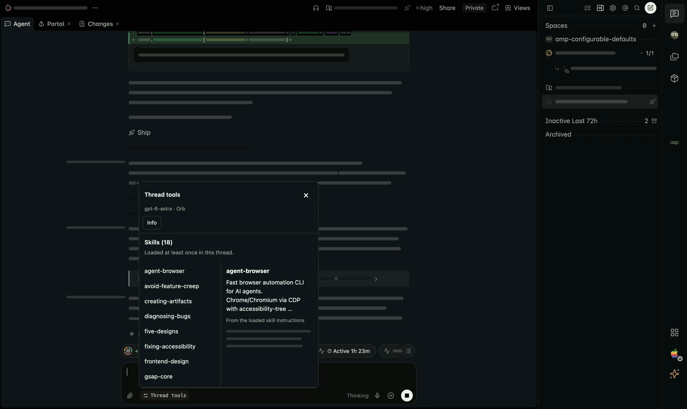
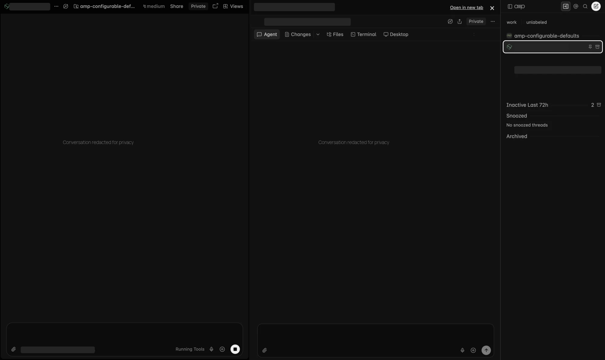
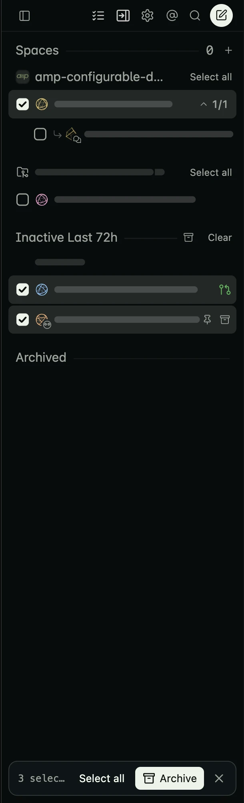

Your Amp.
Your layout.
Put navigation where you want it. Read threads side by side, follow subagents and thread messages, and keep model and runner details close to your draft. An independent, open-source Chrome extension for Amp.
Add to Chrome
Chrome Web Store: 1.4.1 · Free, open source.
See what's new in the 1.4.3 source preview.
Not yet in the store.

- Navigation on the right
- Child threads indented
- Thread tools popover
- Skills, model, and runner in the composer
Small changes.
More room for your work.
Two favorites to start: one long-standing, one new in the 1.4.3 source preview. Every feature has its own switch.
Two threads. One workspace.
Keep a reference conversation beside the thread you're working in. Drag a sidebar thread to the left or right edge of the conversation to open a second pane inside the same Amp page, not the browser's Split View. Both threads keep Amp's native composer.
Prefer the keyboard? Focus a sidebar thread and press Alt+Shift+Left or Alt+Shift+Right. Drag the divider to resize, use its arrow keys, or double-click to reset to an even split.

Archive a batch, not one at a time. New
In the 1.4.3 source preview, the select button in the sidebar header starts selecting. Click rows, Shift-click a range, or choose Select all on a group. Or right-click a project heading for Archive All N Threads.
Every archive asks first and says how many threads are running, which Amp stops when archived. Archived rows slide out right away, and Undo brings them back.

Plus navigation on either side, skills and thread details beside your draft, a reading room for subagents, tool-call previews, thread messages, Spaces support, and settings inside Amp.
See all features
A small install.
A familiar workspace.
Version 1.4.1 is available on the Chrome Web Store. To try the unreleased 1.4.3 source, follow these steps to load it locally in Chrome.
Download source ZIPDownloads main from GitHub, currently the unreleased 1.4.3 preview, not the store package. No build step needed.
Using the native Windows app instead? Follow the experimental WebView2 setup. It loads the source without patching Amp. There is no verified equivalent for the native Mac app.
Read the source on GitHub-
Download and extract.
Unzip the source into a permanent folder. Inside it, find the
amp-configurable-defaults-mainfolder containingmanifest.json. Keep that folder; Chrome loads the extension from it. -
Load it in Chrome.
Type
chrome://extensionsinto Chrome's address bar. Enable Developer mode, click Load unpacked, and select the folder containingmanifest.json, not the ZIP. Keep Developer mode on. Chrome may show a developer-mode warning. -
Pin it. Refresh Amp. Pick a side.
Pin amp configurable defaults from Chrome's Extensions menu. Refresh existing Amp tabs, then click the pinned icon to customize each feature in the popup. Right-click the icon and choose Options for the full settings page.
A few things
worth knowing.
Just a local extension.
Your Amp account stays yours.
Is this an official Amp extension?
No. This is an independent, MIT-licensed project. It is not affiliated with or endorsed by Amp. The Amp name identifies the service it works with.
What does it store or read?
The extension needs local storage and access to ampcode.com only. Chrome may describe that access as reading and changing site data. The 1.4.3 source uses fourteen local preferences, including the new skills, fading, and batch archive options. The store's 1.4.1 release uses eleven. Preferences aren't synced between devices. Subagent reading sheets use content Amp has already rendered; they don't fetch older history or save prompts and results.
When the model label or Info is enabled, the extension requests the open thread's same-origin page data using your Amp session. Messages reads the returned page of incoming and outgoing messages, delivery results, and other thread titles. It checks on transcript changes, at most every five seconds while visible, and refreshes every five seconds while open. It does not send messages or fetch older message pages.
The 1.4.3 skills feature also reads older and newer transcript pages to find successful skill loads and collapsed-turn summaries. It doesn't fetch skill files or run their instructions. These features keep thread data in memory, not persistent storage. The optional timestamp dates only read times Amp already renders.
Drag-to-split loads a live Amp page with its normal network requests. A temporary, tab-scoped rule removes framing and Content Security Policy headers only for that embedded thread URL; this also relaxes script protections inside the frame. There are no analytics.
Read the full privacy policyDoes it work in the native Amp desktop app?
The Windows app can load the unpacked extension through an experimental WebView2 configuration. This is not an official Amp install path. The sidebar and in-app settings were verified; not every extension feature has been tested in the native app. Read the setup, limitations, and undo instructions.
No equivalent setup has been verified for the native Mac app. The Windows method depends on WebView2 and the Windows registry, not a portable Amp preference. On Mac, use desktop Chrome or a Chrome-installed PWA. Mobile Chrome does not support extensions. Below 768px in a supported browser, navigation stays native and subagents use compact inline summaries rather than the desktop panel.
How do I change or undo my settings?
Click the extension's toolbar icon for the settings popup, or right-click it and choose Options. In the 1.4.3 source preview, the sidebar gear opens these settings inside Amp, including the Windows app. Choose individual features and sidebar placement. Switching sides does not disable other features, and turning off the panel keeps inline summaries. There is no master on/off switch. To remove all extension changes, disable or remove the extension in Chrome, then refresh open Amp tabs. For the Windows app, follow the registry undo instructions and fully restart Amp instead.
What if an Amp update changes the layout?
Amp's page structure isn't a public API. A site update may require
an extension update. Disable the extension in Chrome and refresh
Amp if something looks wrong, and report the issue on GitHub.
Local installs do not auto-update: download and extract the new
source ZIP, replacing the files in the existing folder Chrome
loads. For a cloned install, run git pull in that
folder instead. Click Reload in Chrome's
extensions page, re-enable the extension if you disabled it, and
refresh Amp. Keep the installed folder in place; deleting or
moving it breaks the install.